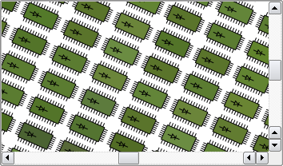

| Home · All Classes · Modules · QSS HELP · QSS 案例 · VER007 HOME |
该QGraphicsView类提供了一个小工具，用于显示的内容QGraphicsScene。More...
通过继承QDeclarativeView。
该QGraphicsView类提供了一个小工具，用于显示的内容QGraphicsScene。
QGraphicsView可视化的内容QGraphicsScene在一个可滚动的视口。要创建具有几何项目的场景，看到QGraphicsScene的文档。 QGraphicsView是部分Graphics View Framework。
看到一个场景，你通过构建一个QGraphicsView对象，传递你希望显示到QGraphicsView的构造场景的地址开始。或者，您也可以致电setScene（）来设置场景在稍后一点。你打电话后show（ ） ，视图将默认滚动到场景的中心，并显示在这一点上可见的任何物品。例如：
QGraphicsScene scene; scene.addText("Hello, world!"); QGraphicsView view(&scene); view.show();
你可以明确地滚动到现场使用滚动条的任何位置，或致电centerOn（ ） 。通过传递点centerOn（ ） ， QGraphicsView将滚动的视口，以确保点集中在视图中。过载提供滚动到QGraphicsItem在这种情况下QGraphicsView将看到的项的中心为中心的视图。如果你想要的是确保一定的区域是可见的， （但不一定为中心），你可以调用ensureVisible（ ）来代替。
QGraphicsView可以用来可视化整个场景，或仅部分。可视化领域是默认自动检测时显示的视图第一次（通过调用QGraphicsScene.itemsBoundingRect（））。要设置可视区域矩形自己，你可以调用setSceneRect（ ） 。这将适当调整滚动条“的范围。请注意，虽然场景支持几乎无限的大小，滚动条的范围不会超过一个整数（ INT_MIN ， INT_MAX ）的范围内。
QGraphicsView通过调用可视化场景render（ ） 。默认情况下，该项目通过使用常规绘制到视QPainter以及使用默认呈现提示。要更改默认的渲染提示QGraphicsView传递到QPainter涂装项目时，您可以拨打setRenderHints（ ） 。
默认情况下， QGraphicsView提供了一个正规QWidget为视角构件。您可以通过调用访问这个widgetviewport（ ） ，或者你可以通过调用替换它setViewport（ ） 。为了呈现使用OpenGL ，只需调用setViewport （新QGLWidget） 。 QGraphicsView需要视口部件的所有权。
QGraphicsView支持仿射变换，用QTransform。您可以将矩阵要么传递给setTransform（ ） ，或者您也可以拨打方便的功能之一rotate（ ）scale（ ）translate（）或shear（ ） 。最常见2转换的比例，这是用于实现缩放和旋转。 QGraphicsView保持在转换过程中的固定视图的中心。因为现场校准（ setAligment （ ） ）的，翻译的看法不会有视觉冲击力。
您可以使用鼠标和键盘对场景中的项目进行互动。 QGraphicsView转化鼠标和键盘事件到scene事件（事件继承QGraphicsSceneEvent， ） ，并将其转发到可视化的场景。在最后，它是处理该事件并发生反应，它们的个别项目。例如，如果你点击一个可选项目，该项目将通常让现场知道它已被选中，它也将重绘自身来显示一个选择矩形。 Similiary ，如果您单击并拖动鼠标来移动一个可移动的项目，它是处理鼠标移动和移动自己的项目。项目的互动是默认启用的，你可以通过调用它切换setInteractive（ ） 。
您也可以提供自己的自定义场景的交互，通过创建QGraphicsView的一个子类，并重新实现鼠标和键盘事件处理程序。为了简化你如何与视图中的项编程交互， QGraphicsView提供了映射函数mapToScene（）和mapFromScene（） ，并且项目的存取items（）和itemAt（ ） 。这些功能允许你映射视图坐标和场景之间的坐标点，矩形，多边形和路径，并找到使用视图坐标在现场的项目。

这个枚举说明您可以对设置的标志QGraphicsView的缓存模式。
| Constant | Value | Description |
|---|---|---|
| QGraphicsView.CacheNone | 0x0 | 所有的画是直接完成到视口。 |
| QGraphicsView.CacheBackground | 0x1 | 后台缓存。这会影响自定义的背景，并基于该背景backgroundBrush属性。当这个标志被启用，QGraphicsView将分配一个像素图与视口的全尺寸。 |
CacheMode参数类型是一个typedef为QFlags\u003cCacheModeFlag\u003e 。它存储CacheModeFlag值的或组合。
See also cacheMode。
按住并拖动鼠标移到视口时，此枚举描述的默认操作的视图。
| Constant | Value | Description |
|---|---|---|
| QGraphicsView.NoDrag | 0 | 什么也没有发生;鼠标事件被忽略。 |
| QGraphicsView.ScrollHandDrag | 1 | 光标变为手形指针，和周围拖动鼠标将滚动scrolbars 。此模式无论是在interactive和非交互模式。 |
| QGraphicsView.RubberBandDrag | 2 | 橡胶带将出现。拖动鼠标，将设置橡皮筋的几何形状，以及所涵盖的橡皮筋会选择所有项目。这种模式对于非交互式的看法禁用。 |
See also dragMode和QGraphicsScene.setSelectionArea（ ） 。
这个枚举说明标志，您可以启用，以提高渲染性能QGraphicsView。默认情况下，没有这些标志的设置。请注意，设置一个标志，通常对一个副作用，这种作用可以喷漆设备和平台之间变化。
| Constant | Value | Description |
|---|---|---|
| QGraphicsView.DontClipPainter | 0x1 | 此值已过时，没有任何效果。 |
| QGraphicsView.DontSavePainterState | 0x2 | 当渲染，QGraphicsView保护画家状态（见QPainter.save（ ） ）绘制背景或前景时，并呈现每个项目时。这可以让你离开画家在改变状态（例如，你可以调用QPainter.setPen（）或QPainter.setBrush（ ）无涂装后恢复状态） 。但是，如果项目持续做恢复状态，您应该启用这个标志，以防止QGraphicsView从做同样的。 |
| QGraphicsView.DontAdjustForAntialiasing | 0x4 | 禁用QGraphicsView的抗锯齿自动调整曝光过的区域。该渲染的抗锯齿边界线的项目QGraphicsItem.boundingRect（ ）可以结束了渲染线的部分外。为了防止渲染文物，QGraphicsView通过在各个方向2像素展开所有暴露区域。如果您启用这个标志，QGraphicsView将不再执行这些调整，最大限度地减少需要重绘，从而提高了性能方面。一个常见的副作用是那些绘制抗锯齿项目能留下痕迹的绘画背后的身影，因为他们所感动。 |
| QGraphicsView.IndirectPainting | 0x8 | 由于Qt的4.6 ，恢复旧的绘画算法调用QGraphicsView.drawItems（）和QGraphicsScene.drawItems（ ） 。要只是为了与旧代码的兼容性使用。 |
这个枚举被引入或修改的Qt 4.3 。
该OptimizationFlags类型是一个typedef为QFlags\u003cOptimizationFlag\u003e 。它存储OptimizationFlag值的或组合。
此枚举描述了可能的锚QGraphicsView当用户改变视图或视图时转化可以使用。
| Constant | Value | Description |
|---|---|---|
| QGraphicsView.NoAnchor | 0 | 无锚，即认为离开现场的位置不变。 |
| QGraphicsView.AnchorViewCenter | 1 | 在视图的中心现场点作为支撑点。 |
| QGraphicsView.AnchorUnderMouse | 2 | 鼠标下的点作为支撑点。 |
See also resizeAnchor和transformationAnchor。
这个枚举说明如何QGraphicsView更新其视口时的情景内容变更或暴露。
| Constant | Value | Description |
|---|---|---|
| QGraphicsView.FullViewportUpdate | 0 | 当场景中任何可见部分改变或再次暴露，QGraphicsView将更新整个视口。这种方法是最快的时候QGraphicsView花费更多的时间搞清楚什么画会比花绘图（例如，当非常多的小项目，多次更新） 。这是优选的更新模式对视口不支持部分更新，如QGLWidget，为此，需要禁用滚动优化的视口。 |
| QGraphicsView.MinimalViewportUpdate | 1 | QGraphicsView将确定的最小视口区域需要重绘，尽量减少避免那些没有改变的区域重绘图纸花费的时间。这是QGraphicsView的默认模式。虽然这种方法提供了最佳的性能在一般情况下，如果有在现场许多小可见的变化，QGraphicsView最终可能会花费更多的时间寻找最小的方法比将斥资绘图。 |
| QGraphicsView.SmartViewportUpdate | 2 | QGraphicsView将尝试通过分析那些需要重绘的区域找到一个最佳的更新模式。 |
| QGraphicsView.BoundingRectViewportUpdate | 4 | 在视口中的所有更改的边框将被重新绘制。这种模式具有的优点是QGraphicsView搜索只有一个变化区域，最大限度地减少花费的时间确定什么需要重绘。它的缺点是没有变化的区域也需要被重新绘制。 |
| QGraphicsView.NoViewportUpdate | 3 | QGraphicsView永远不会更新其视口时的情景变化，用户有望控制所有更新。此模式禁用所有（可能慢）项的可见性测试QGraphicsView以及适合于场景，要么需要固定帧速率，或在视口外部，否则更新。 |
这个枚举被引入或修改的Qt 4.3 。
See also viewportUpdateMode。
该parent的说法，如果不是没有，原因self通过Qt的，而不是PyQt的拥有。
构造一个QGraphicsView。parent被传递给QWidget的构造。
该parent的说法，如果不是没有，原因self通过Qt的，而不是PyQt的拥有。
构造一个QGraphicsView并设置可视化场景scene。parent被传递给QWidget的构造。
滚动视口的内容，以确保现场协调pos，集中在视图中。
因为pos是一个浮点坐标，滚动条上的整数坐标进行操作，对中只是一个近似值。
Note:如果该项目已接近或外部的边界，这将是可见的视图，但不集中。
See also ensureVisible（ ） 。
这是一个重载函数。
此功能提供了方便。这相当于调用centerOn （QPointF（x，y））。
这是一个重载函数。
滚动视口的内容，以确保item集中在视图中。
See also ensureVisible（ ） 。
从重新实现QWidget.contextMenuEvent（ ） 。
从重新实现QWidget.dragEnterEvent（ ） 。
从重新实现QWidget.dragLeaveEvent（ ） 。
从重新实现QWidget.dragMoveEvent（ ） 。
绘制的场景采用背景painter之前，任何产品和前景绘制。重新实现这个函数提供一个自定义的背景这一观点。
如果你想要的是定义一个颜色，纹理或渐变的背景，你可以调用setBackgroundBrush（ ）来代替。
所有的绘制是在做scene坐标。rect是暴露的矩形。
默认实现罢了rect使用视图的backgroundBrush。如果没有这样的笔刷定义（默认） ，场景的drawBackground （ ）函数被调用来代替。
See also drawForeground（）和QGraphicsScene.drawBackground（ ） 。
绘制场景的使用前景painter，背景和所有项目后得出。重新实现这个函数提供一个自定义前景的这一观点。
如果你想要的是定义一个颜色，纹理或渐变的前景，你可以调用setForegroundBrush（ ）来代替。
所有的绘制是在做scene坐标。rect是暴露的矩形。
默认实现罢了rect使用视图的foregroundBrush。如果没有这样的笔刷定义（默认） ，场景的drawForeground （ ）函数被调用来代替。
See also drawBackground（）和QGraphicsScene.drawForeground（ ） 。
从重新实现QWidget.dropEvent（ ） 。
视口的滚动内容，使现场的矩形rect可见，与以像素为单位指定页边距xmargin和ymargin。如果指定的矩形无法达成，内容滚动到最近的有效位置。两个边距的默认值是50个像素。
See also centerOn（ ） 。
这是一个重载函数。
此功能提供了方便。这相当于调用ensureVisible （QRectF（x，y，w，h） ，xmargin，ymargin） 。
这是一个重载函数。
滚动视口的内容，使项目的中心item可见，与以像素为单位指定页边距xmargin和ymargin。如果指定的点不能达到，其内容被滚动到最近的有效位置。两个边距的默认值是50个像素。
See also centerOn（ ） 。
从重新实现QObject.event（ ） 。
缩放视图矩阵和滚动滚动条，以确保现场的矩形rect适合视口内。rect必须是现场矩形内部，否则fitInView （ ）不能保证整个RECT是可见的。
此功能保持视图的旋转，平移，或剪切。该视图是根据缩放aspectRatioMode。rect将集中在视图中，如果它不紧紧贴合。
这是常见的从一个重新实现内部调用fitInView （ ）resizeEvent（ ） ，以确保整个场景或场景的部分，自动缩放以适应视口的新大小作为视图调整大小。不过请注意，从里面调用fitInView （ ）resizeEvent（ ）可能会导致不必要的调整大小递归，如果新的变革切换滚动条的自动状态。您可以切换滚动条政策，以常开或常关闭，以防止这种情况（见horizontalScrollBarPolicy（）和verticalScrollBarPolicy（））。
If rect是空的，或者如果视口太小，这个函数不会做任何事。
See also setTransform（ ）ensureVisible（）和centerOn（ ） 。
这是一个重载函数。
这个方便的功能等同于调用fitInView （QRectF（x，y，w，h） ，aspectRatioMode） 。
See also ensureVisible（）和centerOn（ ） 。
这是一个重载函数。
确保item紧密配合在视图内，根据缩放视图aspectRatioMode。
See also ensureVisible（）和centerOn（ ） 。
从重新实现QWidget.focusInEvent（ ） 。
从重新实现QWidget.focusNextPrevChild（ ） 。
从重新实现QWidget.focusOutEvent（ ） 。
从重新实现QWidget.inputMethodEvent（ ） 。
从重新实现QWidget.inputMethodQuery（ ） 。
这种方法也是一个Qt槽与C + +的签名void invalidateScene(const QRectF& = QRectF(),QGraphicsScene::SceneLayers = QGraphicsScene.AllLayers)。
废止及时间表重绘layers内rect。rect在场景坐标。对于任何缓存的内容layers内rect无条件失效并重新绘制。
你可以调用这个函数来通知QGraphicsView的改变，背景或场景的前景。它通常用于场景与基于区块的背景来通知改变时QGraphicsView启用了后台缓存。
需要注意的是QGraphicsView目前支持后台缓存只（见QGraphicsView.CacheBackground） 。此功能相当于调用update（ ）如有层，但QGraphicsScene.BackgroundLayer被传递。
See also QGraphicsScene.invalidate（）和update（ ） 。
返回True如果视图被转换（即，非恒等变换已被分配，或滚动条进行调整） 。
此功能被引入Qt的4.6 。
See also setTransform（ ）horizontalScrollBar（）和verticalScrollBar（ ） 。
返回在位置的项目pos，这是在视口坐标。如果有多个项目在这个位置，这个函数返回的最上方项目。
例如：
void CustomView.mousePressEvent(QMouseEvent *event) { if (QGraphicsItem *item = itemAt(event->pos())) { qDebug() << "You clicked on item" << item; } else { qDebug() << "You didn't click on an item."; } }
这是一个重载函数。
此功能提供了方便。这相当于调用itemAt （QPoint（x，y））。
返回相关联的场景中的所有项目，按降序堆叠顺序（即，在返回列表中的第一项是最上面的项目）的列表。
See also QGraphicsScene.items（）和Sorting。
返回所有项目的列表的位置pos在视图中。该项目按递减顺序堆叠（即，在列表中的第一个项目是最上面的项目，最后项目是最下面的项目） 。pos在视口中坐标。
这个功能是最常用的内鼠标事件处理程序调用子类中的QGraphicsView。pos在未转化的视口坐标，就像QMouseEvent.pos（ ） 。
void CustomView.mousePressEvent(QMouseEvent *event) { qDebug() << "There are" << items(event->pos()).size() << "items at position" << mapToScene(event->pos()); }
See also QGraphicsScene.items（）和Sorting。
此功能提供了方便。这相当于调用项目（QPoint（x，y））。
这个方便的功能等同于调用项目（QRectF（x，y，w，h） ，mode） 。
此功能被引入Qt的4.3 。
这是一个重载函数。
返回所有的，取决于项目的列表mode，是由两种或包含与相交rect。rect在视口中坐标。
为默认值mode is Qt.IntersectsItemShape;所有项目的确切形状相交或包含由rect返回。
该项目按降序堆叠顺序（即，在返回列表中的第一项是最上面的项目） 。
See also itemAt（ ）items（ ）mapToScene（）和Sorting。
这是一个重载函数。
返回所有的，取决于项目的列表mode，是由两种或包含与相交polygon。polygon在视口中坐标。
为默认值mode is Qt.IntersectsItemShape;所有项目的确切形状相交或包含由polygon返回。
该项目是由递减堆栈顺序（即，在返回列表中的第一项是最上面的项目）进行分类。
See also itemAt（ ）items（ ）mapToScene（）和Sorting。
这是一个重载函数。
返回所有的，取决于项目的列表mode，是由两种或包含与相交path。path在视口中坐标。
为默认值mode is Qt.IntersectsItemShape;所有项目的确切形状相交或包含由path返回。
See also itemAt（ ）items（ ）mapToScene（）和Sorting。
从重新实现QWidget.keyPressEvent（ ） 。
从重新实现QWidget.keyReleaseEvent（ ） 。
返回现场协调point视口坐标。
See also mapToScene（ ） 。
返回矩形现场rect一个视口坐标的多边形。
See also mapToScene（ ） 。
返回现场多边形的坐标polygon一个视口坐标的多边形。
See also mapToScene（ ） 。
返回现场协调画家路径path一个视口坐标画家路径。
See also mapToScene（ ） 。
此功能提供了方便。这相当于调用mapFromScene （QPointF（x，y））。
此功能提供了方便。这相当于调用mapFromScene （QRectF（x，y，w，h））。
返回视口坐标point映射到场景坐标。
注意：它可以是有用的映射所复盖的像素在整个矩形point代替点本身。要做到这一点，你可以调用mapToScene （QRect（point，QSize（ 2，2） ））。
See also mapFromScene（ ） 。
返回视口矩形rect映射到一个场景坐标的多边形。
See also mapFromScene（ ） 。
返回多边形视口polygon映射到一个场景坐标的多边形。
See also mapFromScene（ ） 。
返回视口画家路径path映射到一个场景的坐标画家路径。
See also mapFromScene（ ） 。
此功能提供了方便。这相当于调用mapToScene （QPoint（x，y））。
此功能提供了方便。这相当于调用mapToScene （QRect（x，y，w，h））。
返回该视图的当前转换矩阵。如果没有当前变换设置，返回单位矩阵。
See also setMatrix（ ）transform（ ）rotate（ ）scale（ ）shear（）和translate（ ） 。
从重新实现QWidget.mouseDoubleClickEvent（ ） 。
从重新实现QWidget.mouseMoveEvent（ ） 。
从重新实现QWidget.mousePressEvent（ ） 。
从重新实现QWidget.mouseReleaseEvent（ ） 。
从重新实现QWidget.paintEvent（ ） 。
呈现source矩形，这是在视图坐标，从场景到target，这是在绘制设备坐标，使用painter。此功能可用于捕获视图的内容到一个绘图设备，如一个有用的QImage（例如，采取截图） ，或用于印刷QPrinter。例如：
QGraphicsScene scene; scene.addItem(... ... QGraphicsView view(&scene); view.show(); ... QPrinter printer(QPrinter.HighResolution); printer.setPageSize(QPrinter.A4); QPainter painter(&printer); // print, fitting the viewport contents into a full page view.render(&painter); // print the upper half of the viewport into the lower. // half of the page. QRect viewport = view.viewport()->rect(); view.render(&painter, QRectF(0, printer.height() / 2, printer.width(), printer.height() / 2), viewport.adjusted(0, 0, 0, -viewport.height() / 2));
If source是一个空矩形，该函数将使用viewport（） - \u003erect（）来确定要画什么。如果target是一个空矩形，的全尺寸painter的涂料设备（例如，对于一个QPrinter，页大小）将被使用。
矩形内容源将根据待转化aspectRatioMode以适应目标矩形。默认情况下，纵横比蒙了，source缩放以适合target。
See also QGraphicsScene.render（ ） 。
重置任何缓存内容。调用此函数将清除QGraphicsView的缓存。如果当前缓存模式CacheNone，这个函数不执行任何操作。
此功能自动为您调用的时候，backgroundBrush or QGraphicsScene.backgroundBrush性质发生变化，你只需要调用这个函数，如果你已经重新实现QGraphicsScene.drawBackground（）或QGraphicsView.drawBackground（）来绘制一个自定义背景，以及需要触发一个完全重绘。
See also cacheMode（ ） 。
重置视图变换矩阵为单位矩阵。
See also resetTransform（ ） 。
重置视图转换为单位矩阵。
See also transform（）和setTransform（ ） 。
从重新实现QWidget.resizeEvent（ ） 。
旋转当前视图转换angle度顺时针旋转。
See also setTransform（ ）transform（ ）scale（ ）shear（）和translate（ ） 。
由（缩放当前视图转换sx，sy） 。
See also setTransform（ ）transform（ ）rotate（ ）shear（）和translate（ ） 。
返回一个指针，在视图中当前可视化的场景。如果没有现场正在显现，则返回0 。
See also setScene().
从重新实现QAbstractScrollArea.scrollContentsBy（ ） 。
设置视图的当前转换矩阵matrix。
If combine是真的，那么matrix是结合当前矩阵，否则matrix replaces当前矩阵。combine默认为False 。
变换矩阵tranforms现场成视图坐标。使用默认的转变，由单位矩阵提供，在视图中一个像素代表一个单位中的场景（例如，一个10×10的矩形项目使用视图10X10像素绘制） 。如果一个2x2矩阵缩放应用，该场景将在1:2绘制（例如，一个10×10的矩形产品，然后使用视图20×20像素绘制） 。
例如：
QGraphicsScene scene; scene.addText("GraphicsView rotated clockwise"); QGraphicsView view(&scene); view.rotate(90); // the text is rendered with a 90 degree clockwise rotation view.show();
为了简化互为作用与使用转换视图中的项目，QGraphicsView提供mapTo ...和mapFrom ...功能，可以现场和视图坐标之间的转换。例如，你可以调用mapToScene（ ）映射视图坐标为浮点场景坐标，或mapFromScene（）从浮点数的场景地图坐标，查看坐标。
See also matrix（ ）setTransform（ ）rotate（ ）scale（ ）shear（）和translate（ ） 。
Enables flag如果enabled为True，否则禁用flag。
See also optimizationFlags。
If enabled是真的，渲染提示hint被启用，否则它被禁用。
See also renderHints。
设置当前场景scene。如果scene正在被查看，该函数不起作用。
当一个场景设置在一个视图中，QGraphicsScene.changed（ ）信号会自动连接到这个视图的updateScene（ ）插槽，以及视图的滚动条进行调整，以适应现场的大小。
See also scene（ ） 。
设置视图的当前转换矩阵matrix。
If combine是真的，那么matrix是结合当前矩阵，否则matrix replaces当前矩阵。combine默认为False 。
变换矩阵tranforms现场成视图坐标。使用默认的转变，由单位矩阵提供，在视图中一个像素代表一个单位中的场景（例如，一个10×10的矩形项目使用视图10X10像素绘制） 。如果一个2x2矩阵缩放应用，该场景将在1:2绘制（例如，一个10×10的矩形产品，然后使用视图20×20像素绘制） 。
例如：
QGraphicsScene scene; scene.addText("GraphicsView rotated clockwise"); QGraphicsView view(&scene); view.rotate(90); // the text is rendered with a 90 degree clockwise rotation view.show();
为了简化互为作用与使用转换视图中的项目，QGraphicsView提供mapTo ...和mapFrom ...功能，可以现场和视图坐标之间的转换。例如，你可以调用mapToScene（ ）到一个视图coordiate映射到一个浮点场景坐标，或mapFromScene（）从浮点数的场景地图坐标，查看坐标。
See also transform（ ）rotate（ ）scale（ ）shear（）和translate（ ） 。
这种方法也是一个Qt槽与C + +的签名void setupViewport(QWidget *)。
这个槽被调用者QAbstractScrollArea后setViewport（ ）被调用。在子类重新实现此功能QGraphicsView初始化新视widget之前就被采用。
See also setViewport（ ） 。
由（剪当前视图转型sh，sv） 。
See also setTransform（ ）transform（ ）rotate（ ）scale（）和translate（ ） 。
从重新实现QWidget.showEvent（ ） 。
从重新实现QWidget.sizeHint（ ） 。
返回该视图的当前转换矩阵。如果没有当前变换设置，返回单位矩阵。
See also setTransform（ ）rotate（ ）scale（ ）shear（）和translate（ ） 。
由（平移当前视图转型dx，dy） 。
See also setTransform（ ）transform（ ）rotate（）和shear（ ） 。
这种方法也是一个Qt槽与C + +的签名void updateScene(const QList<QRectF>&)。
附表现场矩形的更新rects。
See also QGraphicsScene.changed（ ） 。
这种方法也是一个Qt槽与C + +的签名void updateSceneRect(const QRectF&)。
通知QGraphicsView该场景的场景RECT发生了变化。rect是新的场景正确。如果视图已经有一个明确设定的场景矩形，该函数不起作用。
See also sceneRect和QGraphicsScene.sceneRectChanged（ ） 。
从重新实现QAbstractScrollArea.viewportEvent（ ） 。
返回映射视口坐标场景坐标的矩阵。
See also mapToScene（）和mapFromScene（ ） 。
从重新实现QWidget.wheelEvent（ ） 。
| PyQt 4.10.3 for X11 | Copyright © Riverbank Computing Ltd and Nokia 2012 | Qt 4.8.5 |